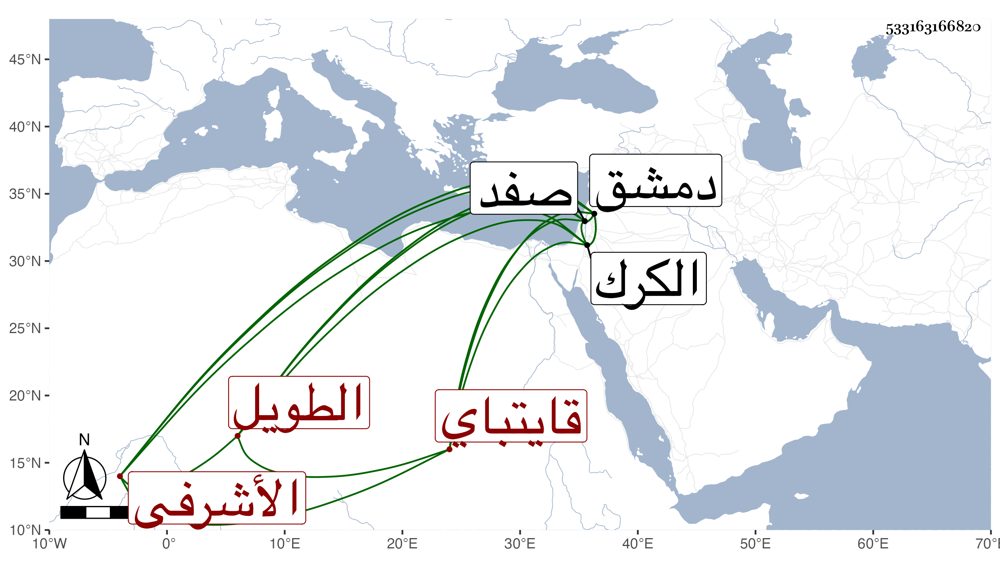

0902Sakhawi.DawLamic.ITO20230111-ara1.EIS1600.533163166820
Biography ID: 533163166820
232
جانبك الطويل الأشرفي قايتباي . رقاه أستاذه لنيابة صفد ثم الكرك ثم لدواداريته بدمشق ، وتزوج ابنة جانم زوج النجمي وأم ولده فاشترت له دار إبراهيم بن بيغوت ، وهي من أجل دور دمشق بثلاثة آلاف دينار واتحد مع حاجبها اينال الخصيف في الظلم والمعاصي والمخالفة على نائبها في الخروج مع التجريدة حتى كانت منيته بعد انفصال نائبها عنها للتجريدة إما في رجب أو شعبان سنة ثلاث وتسعين . واستراح الدمشقيون منه .
